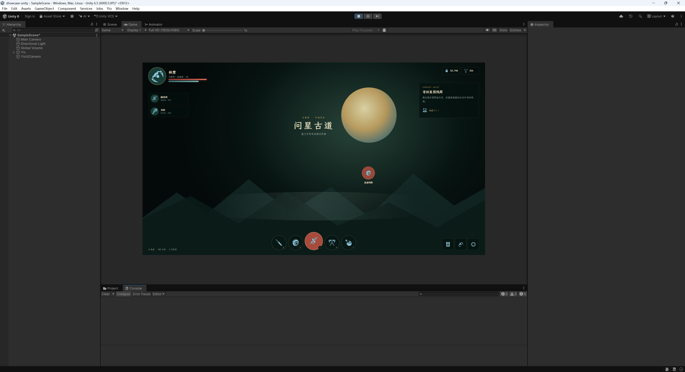
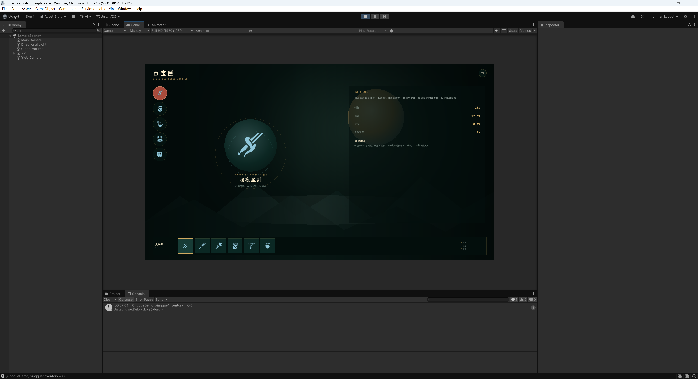
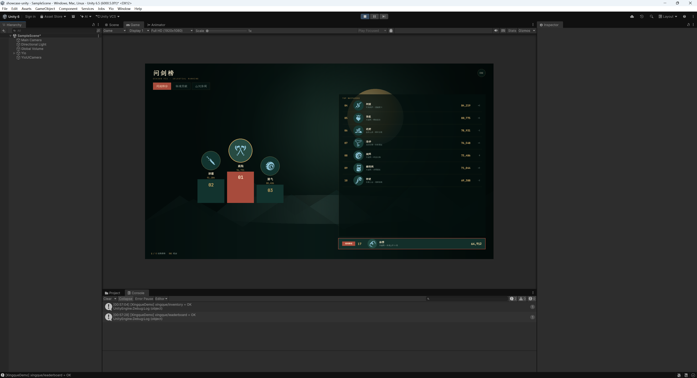

标准语义作为共同语言
AI、人类和工具链共同读写 HTML/CSS。模型可以利用已有 Web 先验理解结构、布局与视觉，不再学习引擎私有资源格式。
AI 大赛项目申报 · 2026
从画 UI、拼 UI 到编写 UI 代码、检查并运行，Yio 把完整开发链路放进同一个对话。LLM 持续理解需求、修改源码、执行验证并修复问题，最终交付可运行、可维护的游戏界面。
Yio 探索 AI 时代游戏 UI 的新生产方式：使用标准 HTML/CSS 表达设计，让 AI 能够理解、生成与修改；通过围栏验证保证结果可靠，再由 Rust 跨引擎核心交付为可运行、可维护的游戏界面。
01 / 项目判断
传统方案把视觉设计、界面搭建、代码接线和运行验证分散在不同工具中，LLM 通常只能参与其中一小段。
Yio 用标准文本和可执行工具把这些环节连成闭环，使 LLM 能在同一个对话中持续生成、检查、修改并交付。
02 / 在线体验
以下三页均按 Yio HTML/CSS 围栏编写，并已通过本地 `yio check`。网页展示设计期预览；真实自绘运行时将在 Unity 实机素材补齐后替换占位。
远征任务、玩家状态、资源与队伍信息。
03 / 核心创新
AI、人类和工具链共同读写 HTML/CSS。模型可以利用已有 Web 先验理解结构、布局与视觉，不再学习引擎私有资源格式。
标签、属性、CSS 值域和控件结构都有机器校验。超出能力范围时明确失败，不把问题留到运行时。
设计期的标签和 ARIA 语义稳定映射为 Button、Slider、ListView 等对象，CSS 改样式但不改变对象身份。
布局、文本、动画、滚动、事件和渲染意图由共享核心计算，Unity 后端只负责输入、资源与原生渲染对象映射。
04 / 技术路径
05 / AI 共创记录
不是只展示最终页面。需求选择、结构拆解、围栏错误、修复动作和最终验证结果均可回看，让评委看到 AI 如何在工程约束内完成工作。
在首轮冷色科技方案反馈不理想后，重新确定东方幻想冒险题材，采用暖宣纸、墨青、朱砂与旧金。
拆分主界面、背包、排行榜三种典型游戏 UI，分别覆盖任务入口、物品管理和数据榜单。
仅使用 Yio 支持的标签、Flex 布局、渐变、阴影、动画和状态选择器，不依赖 Grid、SVG 或第三方组件。
第一轮发现 5 个错误与 10 个画序提示，包括多背景渐变、越界伪类和定位层级不明确。
拆除不支持的复合背景，删除 `:last-child`，并显式声明定位与 z-index，使浏览器与运行时画序一致。
将《寂光远征》整体重构为《星阙行纪》，同步修改世界观、排版、容器形态、交互强调与官网叙事。
参考现代 RPG 的边缘 HUD、图标导航、装备槽与赛季榜单结构，接入 game-icons.net 开源素材，减少网页卡片感。
评审官网直接引用同一份 Yio 页面源码，并展示源码片段、校验结果和 Unity 实机素材占位。
正在读取 Yio 源文件…源码来自当前在线展示页面。部署到静态托管后仍可直接读取，无独立演示副本。
06 / 验证证据
本次新增三页均经过 Yio CLI 围栏验证。项目整体还具备增量与全量布局对拍、浏览器与核心矩形差分、ABI 尺寸断言、包格式版本门和 CI 静态检查。
$ yio check contest/yio-demo --format json
{
"command": "check",
"format_version": 1,
"success": true,
"summary": {
"errors": 0,
"warnings": 0
},
"message": "workspace valid"
}07 / Unity 实机
以下为 Unity 6000.5 编辑器实机截图（Game 视图 1920×1080）：同一份 HTML/CSS 源，评审站嵌入预览与 Unity 运行画面同构；完整操作录屏随申报材料另行提交。



FINAL